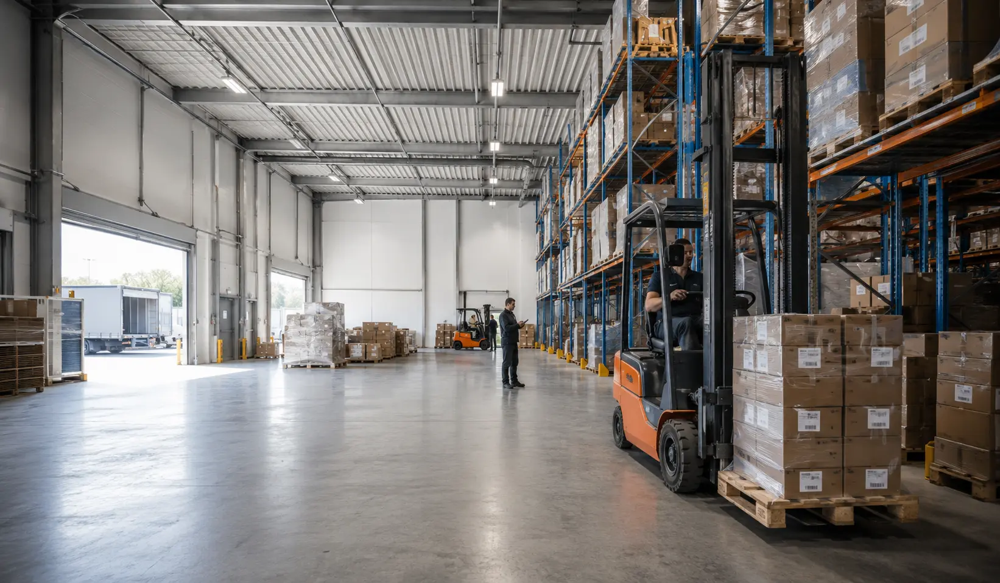
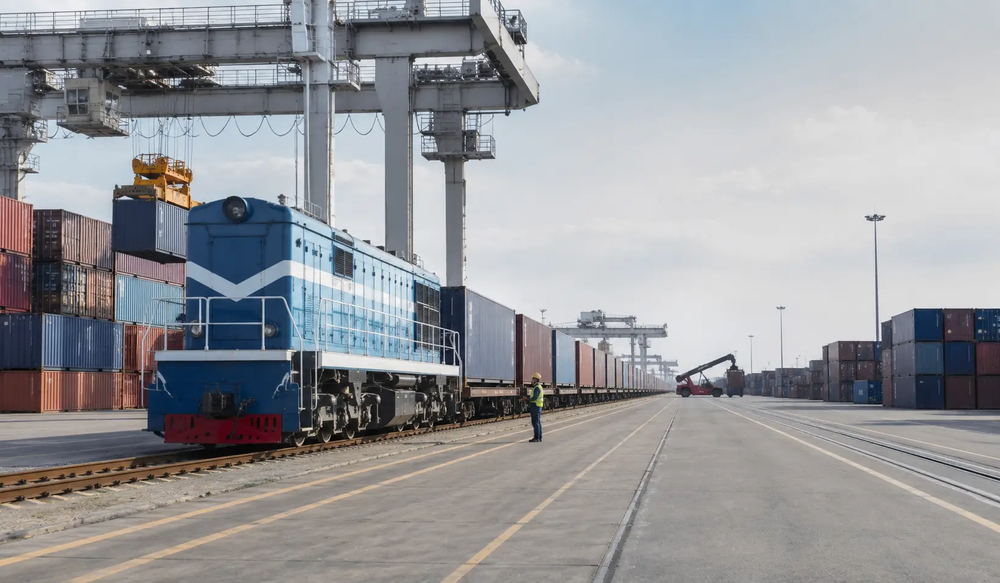
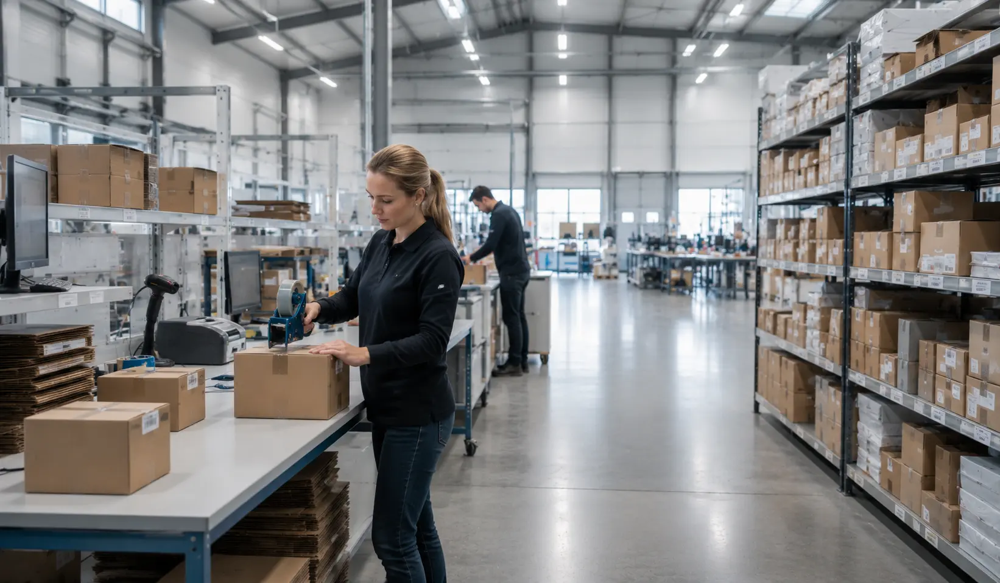
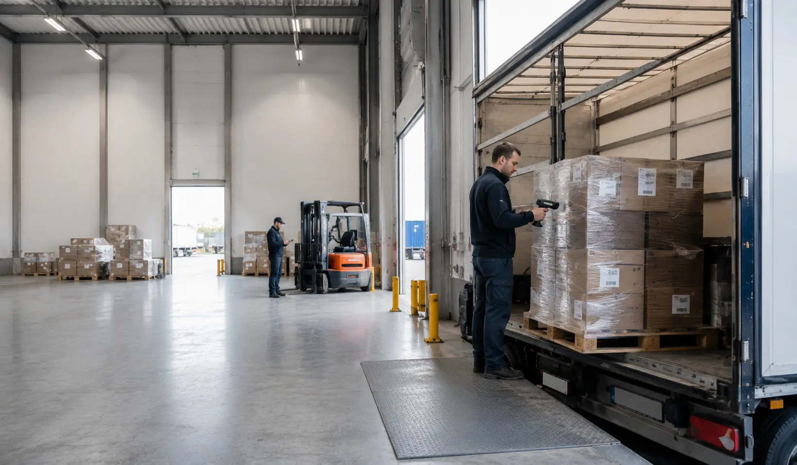

One practical logistics partner
Instead of separating arrival, storage, clearance support, and onward delivery across disconnected providers, Yuxinou Germany GmbH is positioned as one practical partner for cross-border execution.
Yuxinou Germany GmbH combines rail-linked cargo support, customs service, warehouse management, transport coordination, distribution, procurement support, and international trade logistics into one connected operational flow.

The value is not transport in isolation. The value is continuity between rail arrival, transfer handling, customs coordination, warehouse intake, storage flow, and outbound distribution from Duisburg.
Instead of separating arrival, storage, clearance support, and onward delivery across disconnected providers, Yuxinou Germany GmbH is positioned as one practical partner for cross-border execution.

Service scope reflects the confirmed business profile: rail-linked support, customs service, warehouse operations, transport coordination, Europe-wide distribution, procurement support, and international trade and e-commerce logistics.
Coordination of cargo movement linked to the Yuxinou / China Railway Express context, with Duisburg as a practical arrival and redistribution point.
Inbound receiving, organized storage, inventory flow support, and outbound preparation from a Duisburg warehouse base.

Customs-related process coordination and documentation support connected to warehouse and transport execution.

Inland movement planning and release into Germany and connected Central European destinations after inbound cargo arrives.
The strongest commercial advantage is continuity across the handoff points that usually create delays: origin coordination, arrival timing, customs-related handling, warehouse intake, and final distribution release.
Align origin, cargo type, destination needs, and likely handoff points before the cargo reaches Europe.
Coordinate terminal interface, cargo transfer, unloading logic, and next-step handling in Duisburg.
Keep document readiness, customs support, and warehouse receiving aligned so cargo does not lose momentum after arrival.
Move cargo onward into Germany or Central Europe through one connected warehouse-backed dispatch structure.
Duisburg matters operationally because it supports the transition from inbound cargo to practical inland execution. The business profile confirms warehouse presence in Duisburg Logport by the end of 2017.
The site messaging is built for importers, exporters, manufacturers, wholesalers, trading companies, e-commerce businesses, and supply chain teams that need cleaner cross-border execution.
Need customs-related coordination, warehouse intake, and onward release handled as one cross-border workflow.
Need continuity, dependable inbound coordination, and warehouse-backed stock control before use or release.
Need one stock base for multi-destination release across Germany and nearby Central European markets.
Need flexibility between import, storage, customs support, and redistribution into different buyer channels.
Need inbound stock handling, organized storage, and structured outbound release from Germany.
Need cleaner coordination between sourcing, movement, customs, warehouse handling, and final release.
Serving Duisburg, North Rhine-Westphalia, Germany, Central Europe, and China through integrated warehouse, rail, customs, and distribution support.
“We need one location where rail arrival, customs documents, storage, and German delivery can be synchronized.”
Typical importer requirement“Our priority is one German hub that can release stock into several nearby countries without rebuilding the workflow each time.”
Cross-border trading requirement“We use NRW because it keeps access to the Rhine-Ruhr economy and nearby Benelux lanes in one operating geography.”
Representative distribution requirementUse the form below to prepare a B2B logistics inquiry. In this local static version, the submission opens your email client with the inquiry prefilled.